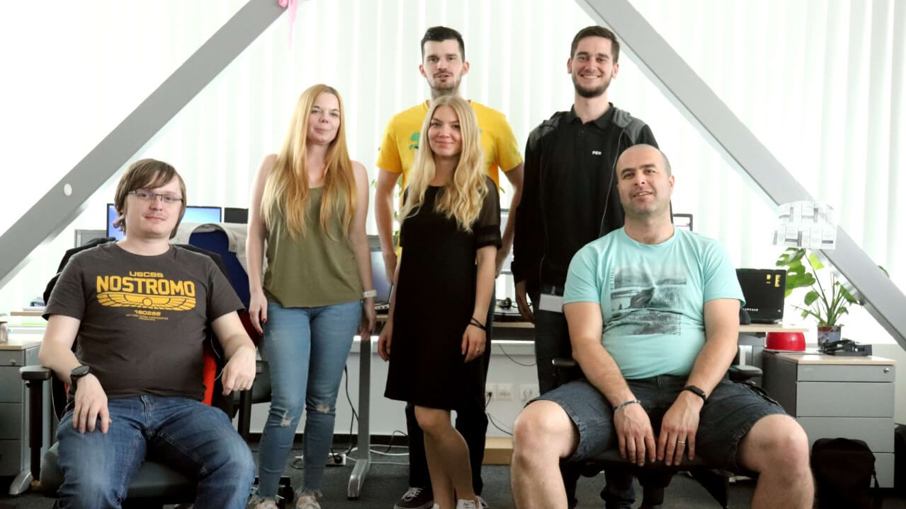
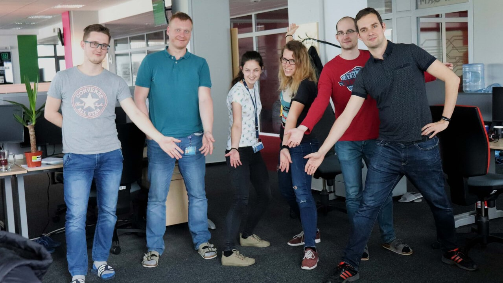

World-Class streaming service
Our client is a leading sports content provider with more than 1000 employees worldwide and 5 development
centers in London, Leeds, Amsterdam, Katowice and Košice. Among its flagship products are popular
subscription-based video streaming service Dazn.com (also known as Netflix of sport), most visited football
portal in the world Goal.com and official WTA streaming service Wtatv.com.
In our Košice office
we focus mostly on development of media platform and content management system. Most of the development work
on these systems is done in Java with usage of popular frameworks such as Spring, Hibernate and GWT. Our
platform relies both on relational Oracle SQL database and Elasticsearch NoSQL database engine. We also have
specialized big data team that harnesses the power of technologies such as Scala, Hadoop, Spark and Neo4j
graph database as well as specialized frontend team masterfully crafting web pages in TypeScript and React.
We are strong believers in automation, our automated tests are mostly written in Python with the usage of
Selenium framework, our infrastructure is fully automated using Puppet and Ansible, while our CI pipeline is
fully scripted in Groovy.
Our project has a strong agile mentality and decisive “build it – own
it” attitude. Our development process is driven by SCRUM framework and values of courage, focus, commitment,
respect and openness. We are also strong believers in roles over titles approach, cross-functional teams and
building a people with T-shaped skills.


DAZN Kosice Teams

The Editorial team prepares the whole platform for editors (sport redactors). They allow to publicize contents which mainly represents articles. Their main focus is collecting attachments based on sports/geo-locations and players.
{kind=link}
This team connects and identifies user accounts. They sort, classify and offer ads based on interest {portals}, demographics. They aggregate data and connect users with DAZN portal. The team applies their own solutions and work with the top technologies

The team creates websites based on client’s requirements. Currently they evolve and support 2 sport websites and keep them working. They are focusing mainly to front-end development.
{kind=link}
The Coverage team takes care of a planning tool that notifies other systems which are already distributed. They also create and schedule sport events via Content Management System.

Project 0 builds platforms for company websites eg. www.Gool.com or Sportingnews. They create support tools, which help to manage DAZN contents. This team directly collaborate with the Poland DAZN side.

The team automates the process of compliance, enforcement and limitation of rights. They also provide banning inappropriate advertisement. The rights should not be violated. The RP team also monitors expiration of contracts.
{kind=link}
Their main responsibility is, to create and maintain platforms for other teams. Their maintain also continous integrations and continuous deployment and upgrades to new technologies. They try to replace Puppet with Ansibe. Code refactoring, and github monitoring is also important part of their work.

The VOD team enables for clients streaming of sport contents. They work with recorded sport videos and also support recording of sport events, create clips via Content Management System and send video contents to different destinations and shares with several clients. The teams main focus in the near future will be to add adverts to the sport videos, where they will collaborate with Google.


This work taught me another type of thinking, programming, not to be afraid of new things, teamwork. I enjoy team work, team atmosphere.
Božena Velebná
QA Engineer
This work taught me responsibility,patience,teamwork. I like to work on things that have a real result. I look forward to the growth of employees, responsibility for project decisions.
Peter Pajkoš
Java tech lead / Serior Developer
At work I enjoy the super team, teaching each other, getting to know the world of front-end / web development. My work improved my logical thinking and aesthetic feeling. On my job, i love flexibile work time and teambuildings.
Jarmila Lichvárova
QA Engineer / Scrum master